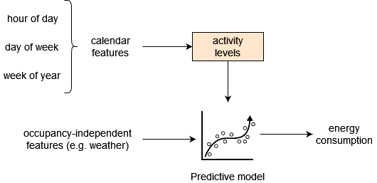

The predict, evaluate and adjust pipelines
4. The predict, evaluate and adjust pipelines#
This chapter explains the functionality behind eensight’s pipelines for producing, evaluating and updating models for counterfactual predictions of energy consumption.
When we use calendar features for counterfactual energy consumption predictions, we make two (2) assumptions:
The calendar features approximate a hidden variable (let’s call it
activity) that reflects the operating schedule of the building, as well as the density of its energy usage.
For instance, activity may reflect the number of people in the building during a specific time, which, in turn, affects the level of plug and/or cooling loads, and/or the heating and cooling strategy that may include a pre-heating or pre-cooling operation based on the expected occupancy changes. This means that activity levels are correlated with occupancy levels, but activity and occupancy don’t always coincide.
The relationship between the calendar features and the
activitylevels remains the same before and after the energy retrofit.
An alternative way to think about activity is to regard it as a hidden variable that explains (part of) the variability of energy consumption given external (i.e. non occupancy-related) variables that are independent of the building’s operation.
The following diagram shows how activity fits into an energy consumption prediction that uses calendar features:

The M&V approach of eensight aims first at estimating directly the activity feature and, then, at calculating the impact of an energy retrofit by comparing energy consumption before and after the retrofit for similar levels of occupancy-independent features (such as outdoor air temperature) and similar activity levels.